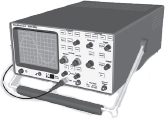

Copyright © 2018 by
The American Radio Relay League
Copyright secured under the Pan-American Convention
International Copyright secured.
No part of this work may be reproduced in any form except by written permission of the publisher. All rights of translation are reserved.
Printed in USA
Quedan reservados todos los derechos
ISBN: 978-1-62595-0796
First Edition
First Printing
eBooks created by www.ebookconversion.com
Updates

There is often additional information regarding the Hands-On Radio experiments — you can find it on the Hands-On Radio Web page at www.arrl.org/hands-on-radio. The contents include links to reference articles and sources of supplies and equipment. There is also a Frequently Asked Questions section that provides explanations about many of the experiments. Readers have contributed their observations and sometimes tools and links that relate to the topic in the experiment. You may find the information helpful as you perform the experiments in this anthology.